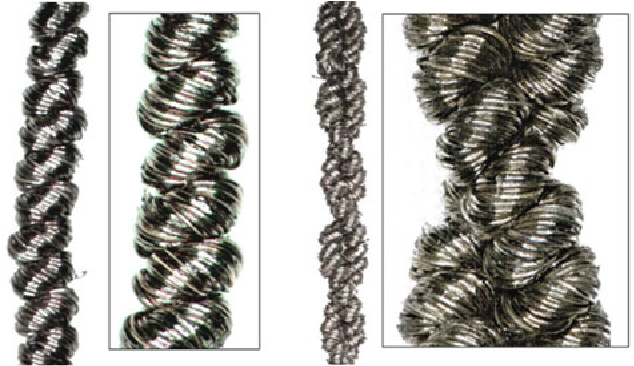
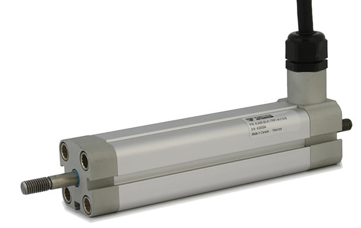
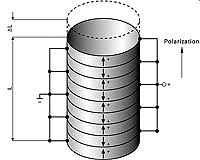

Supercoiled Polymer Actuator
SCP's use polymer threads which can be supercoiled and used in robot actuators that mimic biological muscles.
Supercoiled polymer actuator have many attractive properties, such as high energy density, large contractions, and good dynamic range.
Dielectric Elastomer Actuator
A Dielectric Elastomer Actuator converts electrical energy directly into a mechanical output.
DEAs can be made completely soft and demonstrate energy and power densities comparable to natural muscles.

Shape Memory Alloy Actuator
Shape Memory alloys are metallic materials that can revert to their original shape at certain temperatures.
One benefit of SMA's is that they have high power-to-weight ratios.

Piezoelectric Actuator
Similar to DEA's, Piezoelectric actuators use electrical energy to exert a mechanical force.
These are especially helpful for small displacements that require extremely precise movements.